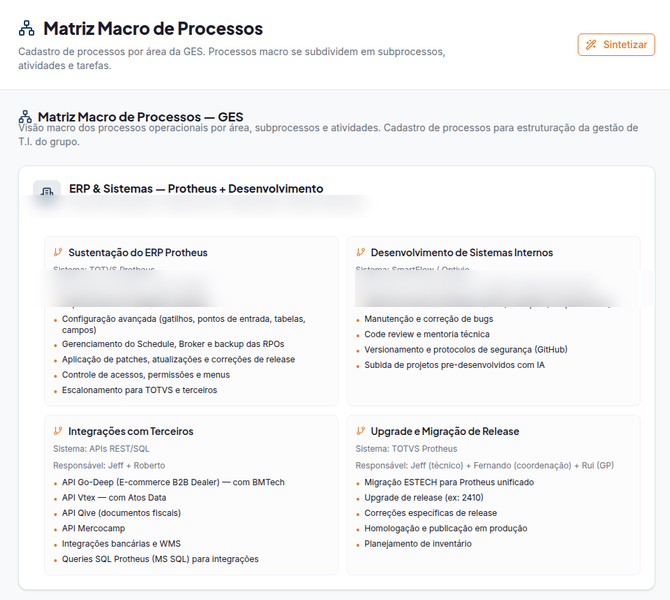
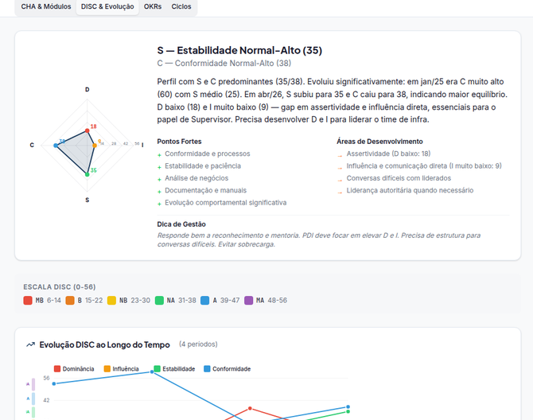
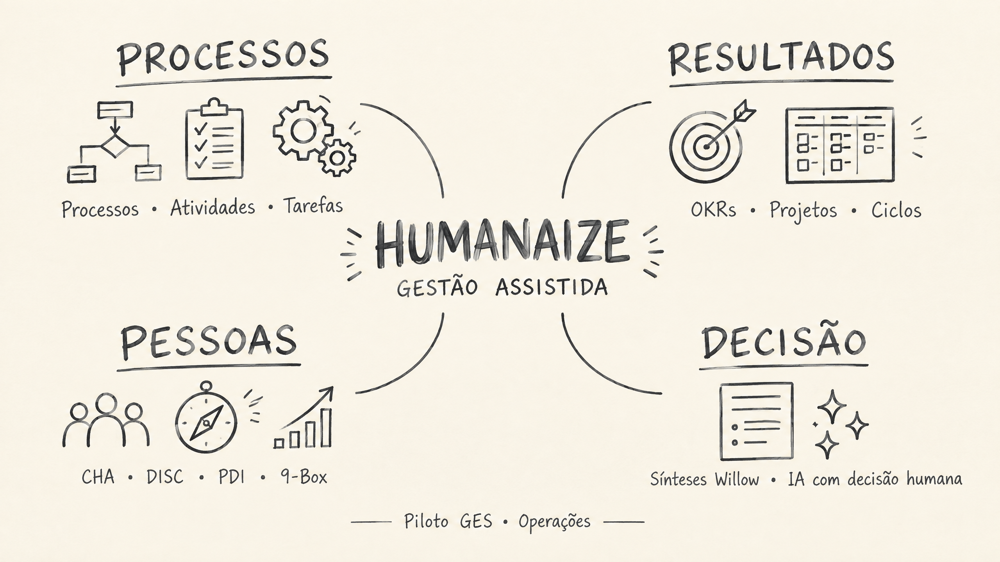
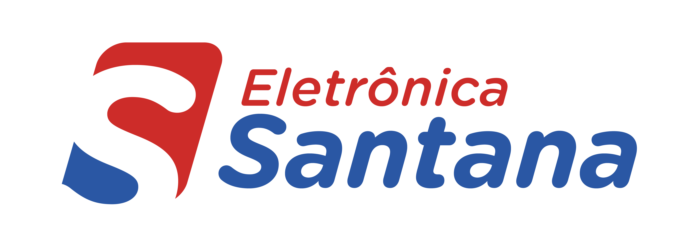
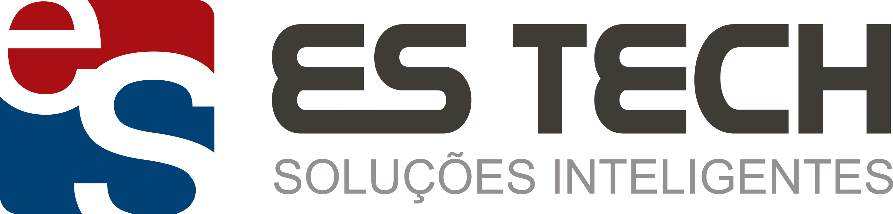

Menos planilha. Mais contexto para liderar.
O Humanaize organiza processos, objetivos, pessoas e evidências em uma única camada de gestão para as empresas e áreas do GES.
Quero conhecer para minha áreaO que o piloto já organiza
Gestão assistida — não mais um sistema.
O Humanaize não substitui ERP, RH, folha, ponto ou as ferramentas de execução. Ele conecta o contexto dessas fontes à rotina de liderança, com processos claros, dados protegidos, sugestões de preenchimento e ciclos de decisão.
A avaliação nasce de responsabilidades combinadas, atividades e evidências — não de percepções isoladas.
DISC, PDI e 9-Box apoiam conversas de crescimento. Não automatizam promoção, remuneração ou desligamento.
O gestor acompanha equipe, objetivos e ciclos no escopo que lhe cabe, com acesso protegido por papel.
O que existe na versão atual
A plataforma já possui módulos funcionais e frentes em consolidação. O status é transparente para que cada líder entre na jornada no momento certo.
Em uso no piloto Funcional
Ativos em consolidação Versão atual
O produto que os líderes vão usar.
Os módulos organizam preenchimento e atualização de forma orientativa. A decisão, a conversa e a priorização continuam nas mãos da liderança, com histórico que sustenta a continuidade do processo.

Processos, atividades, tarefas, sistemas e responsáveis em uma matriz navegável e atualizável.

Metas, resultados-chave, progresso e pontos de atenção que orientam a cadência de execução.

Contexto do período, eventos corporativos e comentários que preservam a memória de gestão.

Leitura evolutiva, pontos fortes, desenvolvimento e dicas de comunicação para devolutivas mais efetivas.

Sintetizar: uma leitura visual que permanece com a gestão.
Em relatórios de processos, OKRs, ciclos e DISC, o líder pode gerar uma síntese visual handdraw de nível adequado à situação. A imagem é registrada no histórico e não se desconecta do conteúdo que a originou.
- Transforma densidade em uma leitura de reunião.
- Preserva conceitos únicos e destaca conexões.
- Usa IA para organizar; a decisão continua humana.
Uma plataforma para o Grupo, respeitando cada empresa.
O desenho permite organizar escopos distintos por empresa, área, equipe, gestor e ciclo — sem forçar uma mesma rotina onde os negócios são diferentes.


Sua área está pronta para criar uma gestão mais visível?
O onboarding começa por um mapeamento responsável dos processos críticos, das responsabilidades e dos ritos que a liderança precisa sustentar. Não é uma adesão automática nem uma migração de planilhas sem critério.
Solicitar conversa de onboarding